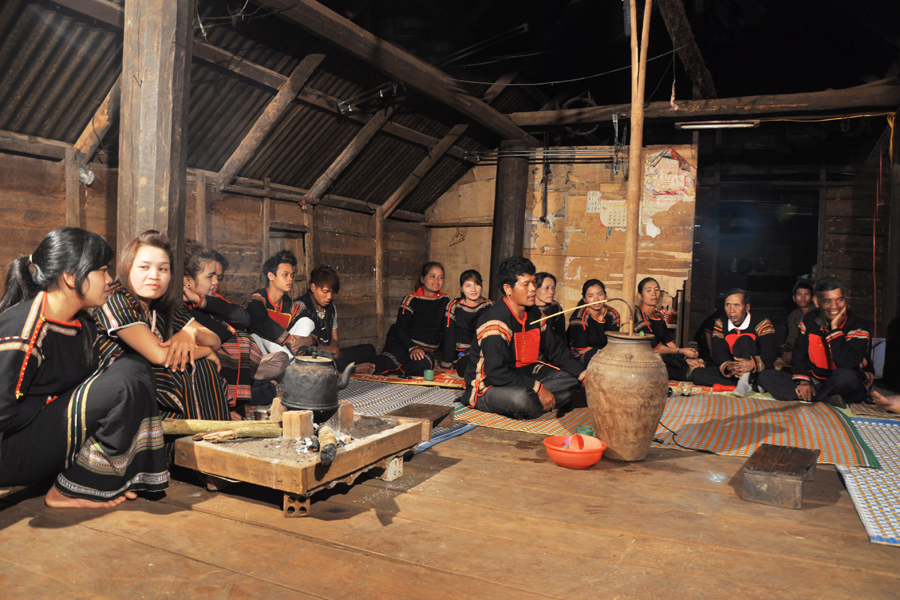

Sử thi - linh hồn của văn hóa Tây Nguyên
Sử thi có thể coi là cuốn “bách khoa toàn thư” của đồng bào Tây Nguyên. Bởi qua đó, người ta thấy được cả một bề dày văn hóa, một chiều dài lịch sử, cũng như những kinh nghiệm sống được tích lũy lâu đời.
Tây Nguyên được coi là mảnh đất của huyền thoại và sử thi chính là những áng anh hùng ca ca ngợi cuộc sống, tình yêu, con người của vùng đất huyền thoại ấy. Có thể nói, sử thi là linh hồn của văn hóa Tây Nguyên. Tùy theo mỗi dân tộc, sử thi được gọi với những tên khác nhau như: Khan (đồng bào Ê Đê), H’amon (đồng bào Ba Na), Hri (đồng bào Gia Rai)…
Có nhiều giả thiết về thời gian ra đời, nhưng có một điều không ai có thể phủ nhận, đó là sử thi Tây Nguyên là một kho tàng văn học dân gian khổng lồ, thậm chí có thể so sánh với thần thoại Hy Lạp. Nét khác biệt giữa sử thi Tây Nguyên với các tác phẩm sử thi cổ điển khác trên thế giới như Ô-đi-xê, Kalevala… là đến nay, sử thi Tây Nguyên vẫn được lưu truyền nguyên bản trong nhân dân, vẫn được trình diễn trong các buổi sinh hoạt cộng đồng. Như vậy, sử thi Tây Nguyên vẫn “sống” trong đời sống cộng đồng, thay vì chỉ tồn tại trên sách vở.
Nội dung của sử thi chứa đựng những biến cố của dân tộc, xoay quanh những chiến công của những anh hùng có công bảo vệ buôn làng, chống lại những thế lực đen tối. Những nhân vật trong sử thi không mang tính cá nhân, mà đại diện cho ước vọng của cả cộng đồng, cho những cuộc đấu tranh vì lý tưởng nhân văn cao cả. Đó là những anh hùng như Đăm San, Đăm Di, Dyông Dư…
Sử thi Tây Nguyên truyền từ đời này qua đời khác thông qua hình thức truyền miệng, nó được lưu giữ trong trí nhớ của người dân. Mỗi khi gia đình hay bộ tộc có lễ lạt như: cưới xin, mừng nhà mới, mừng trẻ nhỏ đầy tháng thì sử thi lại được cất lên.
Sử thi Tây Nguyên có những bộ chỉ kể trong 1-2 đêm là xong, nhưng có những tác phẩm phải kéo dài đến cả tuần. Và điều đặc biệt ở sử thi Tây Nguyên chính là cách kể độc đáo. Người kể sử thi khi cao giọng, khi lắng trầm, khi diễn giọng nữ, khi diễn giọng nam, khi giọng quỷ, khi giọng thần tiên, khi lắng trầm, khi lại ngâm ngợi. Dường như mọi cảm xúc của họ đều dồn hết vào từng nhân vật, như đắm chìm vào thế giới riêng và mỗi lần kể là mỗi lần thăng hoa, “nhập đồng”.
Sử thi được truyền tải đến người nghe qua hình thức hát, kể, diễn xướng. Có những tác phẩm có độ dài đến hàng ngàn câu mà các nghệ nhân thuộc lòng. Chính vì thế, nghệ nhân hát, kể sử thi được coi như “báu vật sống”. Và có lẽ, vì sử thi được sáng tác theo loại văn vần đặc biệt nên các nghệ nhân lại dễ nhớ, dễ thuộc đến vậy. Tuy nhiên, trong số hơn 300 nghệ nhân biết hát, kể sử thi đã được lập hồ sơ đề nghị phong tặng danh hiệu “nghệ nhân dân gian”, thì hiện nay, số người còn sống là rất ít. Riêng ở Đắk Lắk và Đắk Nông, hiện chỉ còn vài người biết hát, kể sử thi Ê Đê và M’nông…

Nếu ai đã một lần được nghe sử thi giữa không gian núi rừng huyền ảo, bên bếp lửa bập bùng, bên ché rượu cần say mê thì sẽ không bao giờ có thể quên được cái không gian lung linh, huyền thoại, nửa hư nửa thực ấy.